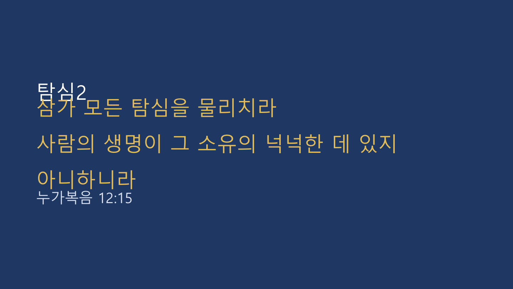

2026.10.11 주일 설교 묵상
탐심2: 내 생명은 무엇에 달려 있는가?
소유의 넉넉함이 아니라, 생명을 주시는 하나님께 내 삶을 거는 법을 하루씩 배우는 일주일
주일 설교 요약
본문: 누가복음 12:15 (개역개정) · 설교자: 황을호 교수
유산을 나눠 달라는 한 사람의 요청 앞에서 예수님은 "삼가 모든 탐심을 물리치라"고 말씀하셨습니다. 곳간을 더 크게 지어 여러 해를 준비한 부자에게 하나님은 "오늘 밤"을 말씀하셨습니다. 재물은 생명을 유지하는 데 쓰이지만 생명을 주지는 못합니다. 죽음을 기억하고, 자족을 배우고, 재물이 하나님께로부터 왔음을 기억하며, 그것을 선하게 쓸 때 우리는 탐심을 이길 수 있습니다.
유산을 나눠 달라는 한 사람의 요청 앞에서 예수님은 "삼가 모든 탐심을 물리치라"고 말씀하셨습니다. 곳간을 더 크게 지어 여러 해를 준비한 부자에게 하나님은 "오늘 밤"을 말씀하셨습니다. 재물은 생명을 유지하는 데 쓰이지만 생명을 주지는 못합니다. 죽음을 기억하고, 자족을 배우고, 재물이 하나님께로부터 왔음을 기억하며, 그것을 선하게 쓸 때 우리는 탐심을 이길 수 있습니다.
주일 설교 슬라이드
1 / 56

좌우 화살표를 눌러 슬라이드를 넘겨보세요.
매일 이렇게 새로워지세요
- 내 날을 세어 보기: 오늘이 다시 오지 않는 하루임을 기억하며 하루를 시작합니다.
- 이미 받은 것 세기: 부족한 것보다 이미 받은 것을 먼저 세며 감사합니다.
- 맡은 사람으로 살기: 내가 가진 것을 내 것이 아니라 하나님이 맡기신 것으로 여깁니다.
- 작게라도 나누기: 돈만이 아니라 시간과 안부, 기도도 이웃과 나눕니다.
요일별 묵상 여정
월요일
제목
성경구절